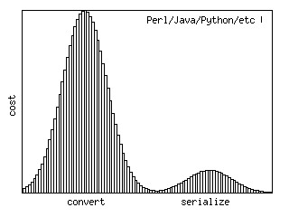
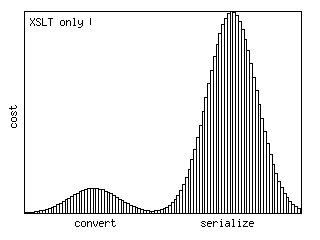
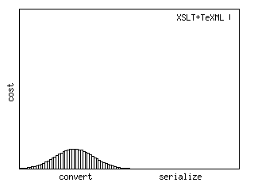

TeXML: an XML syntax for TeX (LaTeX, ConTeXt)
- Do you generate TeX code? Then download and try TeXML.
- Do you convert XML to TeX? Then you ought to use TeXML.
TeXML is an XML syntax for TeX. The processor transforms the TeXML markup into the TeX markup, escaping special and out-of-encoding characters. The intended audience is developers who automatically generate [La]TeX or ConTeXt files.
XML to PDF — TeXML vs XSL-FO
Similarity:
- Both TeXML and XSL-FO are an intermediate step in publishing XML as PDF.
- — In the XSL-FO way, you need an XSL-FO stylesheet.
— By analogue, in the TeXML way, you need a TeXML stylesheet.
Differences:
- — Open-source XSL-FO tools are not yet production quality;
— LaTeX has been a reliable standard for decades.
- — XSL-FO is for good enough PDFs;
— TeXML is targeted to the minority to create excellent PDFs.
XML to TeX — TeXML vs Perl/Java/Python/etc
Development cost of converting XML to TeX using different approaches:
| 100*k man-hours |
100*k man-hours |
k man-hours |
|  |
 |
 |
Convert: decide, for example, that <p> is a paragraph, <note> is a table, etc
Serialize: write result as a valid TeX file |
XSLT is very poor at working with strings, so it is hard to write valid TeX. In contrast, Perl etc. are excellent at handling strings and so can easily produce TeX, but they are inconvenient to manipulate an XML. The solution is TeXML.
- XSLT is an ideal tool to convert XML to XML, and TeXML is an XML syntax for TeX.
- A TeXML processor makes the rest, serializing TeXML to TeX.
TeXML benefits
- LaTeX and ConTeXt support.
- No need to bother escaping TeX special characters.
- No need to bother about empty lines in paragraphs.
- More than 700 unicode characters are mapped to LaTeX commands.
- Support for international publishing.
- Generated TeX code is human-friendly.
- Open source under the MIT/X Consortium license. Can be used in commercial applications.
Resources